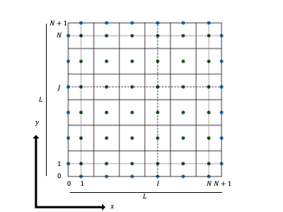
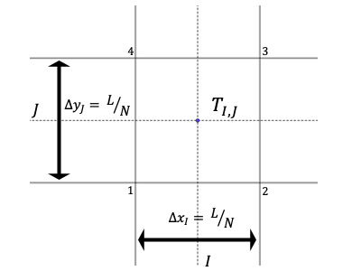
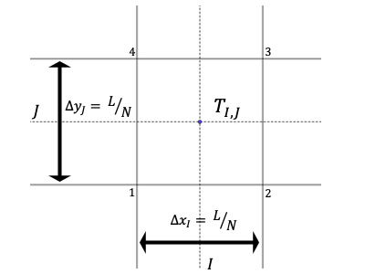

ラプラス方程式とポアソン方程式のシミュレーション
1.ラプラス方程式とポアソン方程式
一様な物質でできている物体内部の温度 $T(x,y,z,t)$ に関する熱拡散方程式は次のように表される．
$$
\frac{\partial T}{\partial t} = \kappa\nabla^2 T\tag{1}
$$
ただし，\(\kappa\)は熱拡散係数である(参考)．熱の拡散が定常である場合，式\(\left(1\right)\)の左辺は\(0\)だから
$$
\nabla^2 T=0\tag{2}
$$
なる式が得られる．これをラプラス方程式という．物体中に熱源があれば
$$
\nabla^2 T=D\tag{3}
$$
というポアソン方程式が導かれる．今回は2次元の場合を仮定して式\(\left(3\right)\)を有限体積法によって離散化したのち，MATLABによって数値解を求める．
2.格子の設定
図1に計算領域全体の略図を示す．計算領域は長さ$L\times L$の領域で，図1の実線で囲まれた $N\times N$ 個の要素をそれぞれ検査体積（以下 $CV$ ）とする．$CV_{I,J}$ (ただし$1\leq I ,J\leq N$) おける温度 $T_{I,J}$ は $CV_{I,J}$ の中央で定義する．
なお，$T_{0,J}$ , $T_{N+1,J}$ , $T_{I,0}$ , $T_{I,N+1}$ は境界条件を表す．さらに，$CV_{I,J}$ を図2に示した．$1$ ~ $4$ の数字は説明のために設定したものである．
なお，$T_{0,J}$ , $T_{N+1,J}$ , $T_{I,0}$ , $T_{I,N+1}$ は境界条件を表す．さらに，$CV_{I,J}$ を図2に示した．$1$ ~ $4$ の数字は説明のために設定したものである．


図1 計算領域の略図

図2 CVの $I, J$ 成分の拡大図
3.離散化
2次元の場合を考えるとき，式$\left(3\right)$をCVで面積分すると
$$
\int_{CV}\nabla^2 T~dxdy = \int_{CV} D~dxdy\tag{4}
$$
となる．ここでガウスの発散定理より，式$\left(4\right)$の左辺は，
\begin{align}
\int_{CV}\nabla^2 T~dxdy&=\int_{CV}\mathrm{div}~\mathrm{grad}\,T~dxdy\\
&=\int_{\partial CV}\mathrm{grad}\,T \cdot \vec{n}~ds
\end{align}
で表されるCVの境界上における線積分となる．したがって式$(4)$は CVの$I, J$成分において，
\begin{align}
\left[ \frac{\partial T}{\partial x} \right]^{2\rightarrow 3}_{4\rightarrow 1}\Delta y_{J} + \left[ \frac{\partial T}{\partial y} \right]^{4\rightarrow 3}_{1\rightarrow 2}\Delta x_{I}
= D_{I, J} \Delta x_{I}\Delta y_{J} \tag{5}
\end{align}
$\partial{T}/\partial{x}$ の境界 $4\rightarrow 1$ における値は $T_{I, J}$ と $T_{I, J-1}$ を用いて次のように表現できる．
\begin{align}
\left.\frac{\partial{T}}{\partial{x}}\right|_{4\rightarrow 1} = \frac{T_{I,J}-T_{I-1,J}}{0.5\left(\Delta x_{I}+\Delta x_{I-1}\right)}
\end{align}
同様に式$(5)$の左辺を式変形し， $T_{I,J}$ について整理すれば，
\begin{align}
a_{IJ}T_{I,J} &= a_{1 \rightarrow 2}T_{I,J-1}\\
&+a_{2 \rightarrow 3}T_{I+1,J}\\
&+a_{3 \rightarrow 4}T_{I,J+1}\\
&+a_{4 \rightarrow 1}T_{I-1,J}\\
&+D_{I,J}\Delta x_{I}\Delta y_{J}\tag{6}
\end{align}
ただし，
\begin{align}
a_{1 \rightarrow 2} &= \frac{\Delta x_{I}}{0.5(\Delta y_{J}+\Delta y_{J-1})}\\
a_{2 \rightarrow 3} &= \frac{\Delta y_{J}}{0.5(\Delta x_{I+1}+\Delta x_{I})}\\
a_{3 \rightarrow 4} &= \frac{\Delta x_{I}}{0.5(\Delta y_{J+1}+\Delta y_{J})}\\
a_{4 \rightarrow 1} &= \frac{\Delta y_{J}}{0.5(\Delta x_{I}+\Delta x_{I-1})}\\
a_{IJ} &= a_{1 \rightarrow 2} + a_{2 \rightarrow 3} + a_{3 \rightarrow 4} + a_{4 \rightarrow 1}
\end{align}
4.プログラムと計算結果
Git hubへのリンクを準備中
最終更新日：2021年5月7日